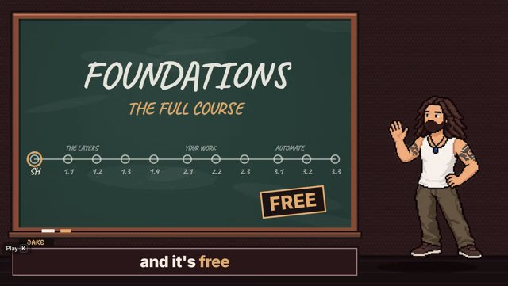

Hi, I'm
Ginger Cross
Marketing and Communications Leader
More than 20 years in local government, nonprofit, B2B, and B2C.
Hi, I'm
Marketing and Communications Leader
More than 20 years in local government, nonprofit, B2B, and B2C.
You → AI
Share your ideas, goals, and context.
AI → You
AI responds, but you decide what to trust.
You → AI
Clear instructions for repeatable tasks.
You ↔ AI
Explore ideas and discover new opportunities.
You don't need to understand everything happening behind the technology to become really good at using it.
But you do need to understand how to communicate with it.
Learn how to get more useful, relevant responses.
Discover ways to work smarter, save time, and get more from AI.
Leave with one practical idea you can put to work right away.
Tip 1 · How you talk to AI
Interactive Prompting
Talk to AI like you'd talk to a friend.
"Okay, so here's the thing..."
"I'm listening. Tell me more."
Tip 1 · Real example
Interactive Prompting
You · voice"Okay, so, um, I run a little yoga studio, and I want more people signing up for classes. Maybe a monthly email? Our members are super busy parents, and I don't want it to sound salesy. I don't know what to say."
You"Before you write anything, interview me. One question at a time."
AI"Happy to. First question: what's the one thing you want readers to do?"
Tip 1 · Try this tomorrow
Interactive Prompting
Try this tomorrow!
Open your favorite AI tool, turn on voice, and talk through something you're working on.
"I'm listening."
Tip 2 · How you question AI
Challenge Its Output
AI can sound confident and still be wrong.
"What am I missing?"
"Let's take another look."
Tip 2 · The research
Challenge Its Output
AI likes to agree with you.
AI affirmed users' actions 0% more often than humans did.
Myra Cheng et al., "Sycophantic AI decreases prosocial intentions and promotes dependence," Science 391, no. 6792 (2026).
Tip 2 · Real example
Challenge Its Output
You"Recommend a promotion to boost sales at my boutique during our slow season."
AI"Run a 30% off weekend sale! Promote it on Instagram. You'll likely double weekend sales!"
You"Challenge your recommendation. What assumptions are you making? What are three things that could go wrong?"
AI · Taking another look
Better plan: Before offering a discount, review your profit margins, past sales, and customer behavior. Then test a promotion.
Tip 2 · A shortcut
Challenge Its Output
/redteam
"Challenge my thinking. Identify three blind spots and question my assumptions."
/redteam is a custom shortcut, not a built-in command. You define it once in your AI tool's instructions. Or just type the request in plain words.
"My favorite shortcut!"
Tip 2 · Try this tomorrow
Challenge Its Output
Try this tomorrow!
"Challenge my thinking. What are three things I might be missing?"
Want a shortcut? Later, you can save this as a custom /redteam command.
Tip 3 · How you guide AI
Teach AI Your Process
Turn repeatable tasks into clear instructions AI can follow.
Tip 3 · Real example
Teach AI Your Process
AI
Knows how to cook. Doesn't know how you like it.
You provide
Steps, rules, preferences, and the result you want.
You evaluate
Taste it. Give feedback.
You save
Keep the better version to use again.
A good recipe makes results more consistent, not identical. You're still the taste tester.
Tip 3 · Make it repeatable
Teach AI Your Process
1
Describe how you do a task you repeat.
2
Have AI follow your instructions.
3
Review the result. Clarify what's missing.
4
Save the instructions for next time.
Some AI tools let you save these as a skill.
You don't have to be a programmer to teach AI how you work. Explain what you do, how you do it, and what a good result looks like.
Tip 3 · Try this tomorrow
Teach AI Your Process
Try this tomorrow!
"Interview me about a task I do regularly. Ask me questions one at a time until you understand my process. Then help me turn it into clear, repeatable instructions you can follow."
Want to go deeper? Optional homework
How I'd Learn AI From Zero in 2026 (the full free course)
Jake Van Clief on YouTube. Explore workflows and reusable AI skills.
Tip 4 · How you think with AI
Think Outside the Box
AI can help you discover opportunities and ideas you hadn't considered.
"What am I missing?"
"Have you looked at your reviews?"
"Ooh. Tell me more."
Tip 4 · Ideas
Think Outside the Box
Discover what customers love that you're not promoting.
You bring: your reviews
Explore pricing ideas and how customers might react.
You bring: your prices and costs
Spot gaps and opportunities in your market.
You bring: what you know about them
Find patterns or trends you might have missed.
You bring: your sales numbers
Tip 4 · Real example
Think Outside the Box
Sample reviews for a hair salon
"Maria remembered my name and my usual. Who does that?"
"Finally a salon where I can bring my daughter."
"In and out on my lunch break, and parking was easy."
You"What do customers love that I never mention in my marketing?"
AI · What I found
Tagline idea: "The salon that remembers you."
Tip 4 · Try this tomorrow
Think Outside the Box
Try this tomorrow!
"Based on what you know about my business, ask me questions to help uncover opportunities I haven't considered."
Behind the scenes
I called the shots.
ChatGPT $20/mo
Thought partner. Brainstorming, organizing ideas, challenging my thinking, and writing prompts.
Claude Code Desktop $20/mo
Coding and building the presentation.
Perplexity Free
Research, fact-checking, and finding sources.
Pen, paper & Post-its
Brainstorming, sketching, and working through ideas away from the screen.
GitHub Free
Stores and tracks every version of the presentation's code.
Not one magic prompt. Conversations, research, experiments, revisions, critical thinking, and creativity.
AI helped me build this presentation.
But it didn't decide what I wanted to say.
I did.
AI is the tool.
Communication is the skill.
You're still the expert.
Start a conversation. See where it takes you.
Keep learning!
Podcast
Daily AI news, explained by Nathaniel Whittemore.
Watch ↗Podcast
Joanne Sweeney's podcast for marketers embracing the AI age.

Community
Rocky Mountain Artificial Intelligence Interest Group. Free meetups, no tech background needed.
Visit ↗
Free course
How I'd Learn AI From Zero in 2026. A full free course on YouTube.
Watch ↗Pick one tip. Try it tomorrow. AI is the tool. You're still the expert.